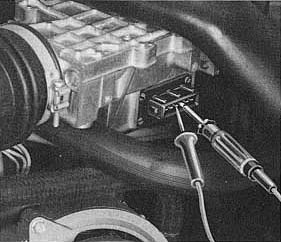

Electrical fault in intake air sensor
- Pull connector off intake air sensor
- Connect ohmmeter to terminals 6 and 9 on intake air sensor (specified
reading 200 to 400 Ohm)
- Measure at terminals 7 and 8 (specified reading 120 to 200 Ohm)

Tip
Reading as specified
Reading outside tolerance --> REPLACE AIR INTAKE SENSOR